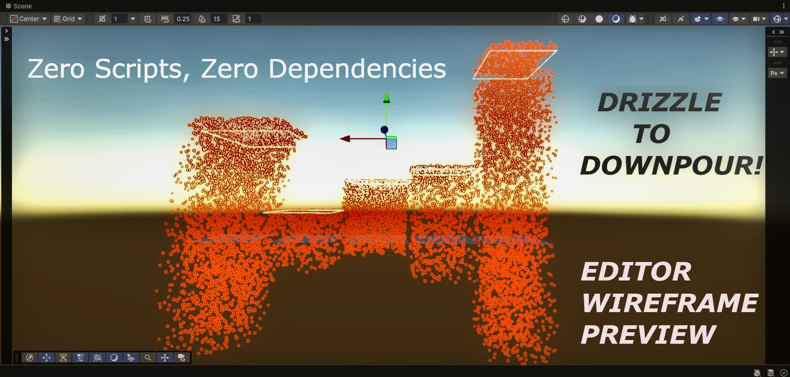

Urban Texture
A high-quality collection of urban textures for roads, walls, pavements, buildings, and environmental assets.
View Project
Rain particle effects
A lightweight, plug-and-play collection of rain particle systems for environmental effects, scenes, and atmospheric weather.
View Project